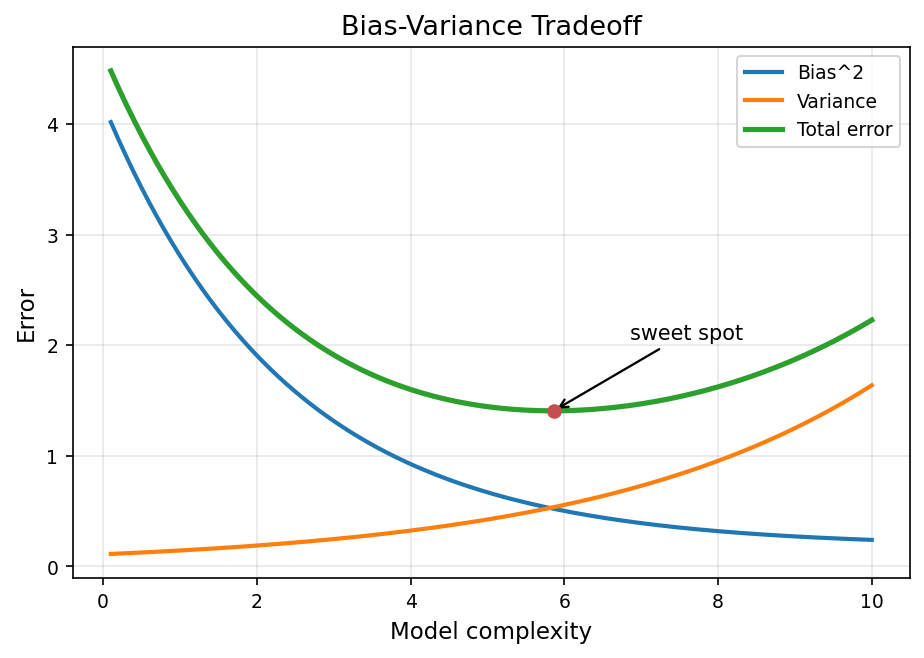
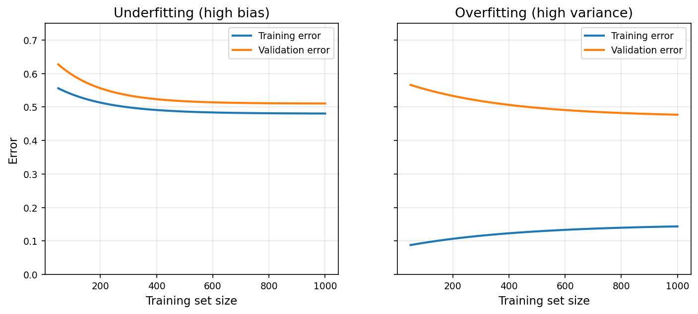
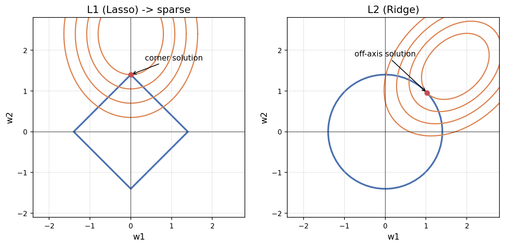

ML 核心觀念：模型學壞了，是太簡單還是太複雜？¶
難度：入門。會一點 Python 和高中代數就夠。 本頁的實驗數字來自 Python 3.12、scikit-learn 1.9.1，2026-10-04 執行。 本頁定位：本區 bias-variance、正則化、樹模型家族 三個主題的完整版在這裡，其他頁指回本頁。評估指標與 CV 的深入版在〈模型評估與 Cross-Validation 實務〉，本頁 §7、§8 只留速查密度。照書走章節的版本見〈Géron《Hands-On ML》Ch1–9〉。
前言¶
機器學習的入門內容，常被整理成一長串名詞：bias、variance、L1、L2、bagging、boosting……每個都有定義，但讀完不一定知道它們在回答同一個問題：模型為什麼在新資料上表現不好，以及該往哪個方向修。
本頁把八個核心觀念串成這條線，並回答三個問題：
- 模型學壞了，怎麼知道是太簡單還是太複雜？（先講結論：同時看訓練誤差和驗證誤差。兩個都高是太簡單；訓練很低、驗證高是太複雜。下面用多項式次數 1、3、15 實測。）
- L1 和 L2 正則化差在哪？（L1 會讓不重要的係數剛好變成 0，等於自動選特徵；L2 只會把係數縮小，不會歸零。100 個特徵裡只有 5 個有用時，L1 把 74 個歸零，L2 一個都沒有。）
- 樹模型為什麼是表格資料的主力？（隨機森林靠平均很多棵不一樣的樹來降 variance，boosting 靠一棵接一棵修錯來降 bias；兩者都不需要特徵縮放，對混雜的表格資料很省事。）
本頁只談監督式學習的觀念；神經網路的訓練細節在〈深度學習訓練基礎〉。
一眼地圖：
ML 類型（在學什麼）→ Bias-Variance（怎麼判斷學壞了）→ 梯度下降（怎麼學）
→ 線性 / 邏輯回歸（最基本的兩個模型）→ 正則化（怎麼不過擬合）
→ 樹模型家族（表格資料主力）→ 交叉驗證（怎麼公正評估）→ 評估指標（用什麼數字衡量）
1. ML 三大類型¶
- 監督式：資料有 label，學「輸入→輸出」的對應。
- 回歸（預測連續值，指標 MAE/MSE/RMSE/R²）、分類（預測類別，指標 Accuracy/P/R/F1/AUC）。
- 非監督式：資料沒有 label，自己找結構。
- 分群（K-Means/DBSCAN）、降維（PCA/t-SNE）、關聯規則（購物籃）。
- 其他：半監督、自監督（BERT 的 masked LM）、強化學習（AlphaGo）。
實務上多數任務是監督式。非監督多用在「label 很貴、先探索」或異常偵測。兩者常搭配使用，例如先用 PCA 降維，再做 K-Means 分群。
2. Bias-Variance Tradeoff：判斷模型學壞在哪¶
誤差可以拆成三塊：Total Error = Bias² + Variance + Irreducible Error
- Bias 高 = 太簡單 = underfitting：模型本身就畫不出資料的形狀，例如用直線去擬合一條曲線。
- Variance 高 = 太複雜 = overfitting：模型把訓練資料的雜訊也背下來，換一批資料答案就大變，例如深度 20 的決策樹。
- Irreducible：資料本身的雜訊，換什麼模型都減不掉。


實驗：多項式次數 1、3、15¶
我們從 y = sin(x) + 雜訊（雜訊標準差 0.3）抽 60 筆當訓練集、1,000 筆當驗證集，分別用 1 次、3 次、15 次多項式回歸去擬合：
import numpy as np
from sklearn.preprocessing import PolynomialFeatures, StandardScaler
from sklearn.pipeline import make_pipeline
from sklearn.linear_model import LinearRegression
rng = np.random.default_rng(0)
x = rng.uniform(-3, 3, 60); y = np.sin(x) + rng.normal(0, 0.3, 60)
xv = rng.uniform(-3, 3, 1000); yv = np.sin(xv) + rng.normal(0, 0.3, 1000)
for deg in [1, 3, 15]:
m = make_pipeline(PolynomialFeatures(deg), StandardScaler(), LinearRegression())
m.fit(x[:, None], y)
# 分別算訓練集與驗證集的 RMSE
| 次數 | 訓練 RMSE | 驗證 RMSE | 診斷 |
|---|---|---|---|
| 1 | 0.533 | 0.509 | 兩個都高、而且很接近 → underfitting |
| 3 | 0.298 | 0.322 | 兩個都接近雜訊的 0.3 → 剛好 |
| 15 | 0.239 | 0.369 | 訓練比雜訊還低、驗證變差 → overfitting |
15 次多項式的訓練 RMSE 是 0.239，比雜訊本身的 0.3 還低。這只有一種可能：它把雜訊背下來了。這個訊號比「驗證誤差比訓練高」更直接，因為驗證誤差本來就會比訓練高一點。
診斷規則整理成表：
| 訓練誤差 | 驗證誤差 | 診斷 | 往哪修 |
|---|---|---|---|
| 高 | 高（接近訓練） | High Bias → Underfitting | 加複雜度、加特徵、降正則化、訓練更久 |
| 低 | 高（差距大） | High Variance → Overfitting | 加資料（最有效也最貴）、加正則化、簡化模型、Ensemble、Dropout、Early stopping |
| 低 | 低 | 好模型 | — |


常見誤解：overfitting 就該加資料
加資料確實最有效，但它只對 variance 有用。如果是 underfitting（兩條線都高、而且已經收斂在一起），加再多資料，兩條線也只是停在同一個高度。 實際後果：花了很多成本蒐集資料，分數不動。先看兩條線的位置，再決定修法。
3. Gradient Descent：模型怎麼學¶
一句話：站在目前的位置，看哪個方向下坡最陡，往那裡踏一步，重複。更新公式 θ ← θ − α·∇L(θ)（α 是 learning rate，負號代表往下坡走）。
三種變形：
- Batch：用全部資料算一次梯度。穩，但慢。
- SGD：一筆資料就更新一次。快，但震盪大。
- Mini-Batch（最常用）：一小批（32/64/128/256）。能用 GPU 平行計算，小幅震盪還能幫忙跳出不好的局部低點。
Learning rate：太小，收斂很慢；太大，來回震盪甚至發散。常用起點 0.001 或 0.01，搭配 scheduler（先大後小）。
進階優化器：Momentum（加慣性）、RMSProp（每個參數自己調 learning rate）、Adam（兩者結合，多數神經網路的預設）。高維空間裡真正常見的障礙通常不是局部最小值，而是 saddle point（某些方向往上、某些方向往下的平台）。各優化器的細節見〈深度學習訓練基礎〉。
def gradient_descent(X, y, lr=0.01, epochs=1000):
w, b, n = 0, 0, len(X)
for _ in range(epochs):
y_pred = w * X + b
dw = (2/n) * np.sum((y_pred - y) * X)
db = (2/n) * np.sum(y_pred - y)
w -= lr * dw; b -= lr * db
return w, b
常見誤解：Adam 永遠比 SGD 好
Adam 收斂快、好調，所以是預設。但有不少研究和實務經驗發現，SGD + Momentum 配上好的 learning rate schedule，最終在測試集上可能泛化得更好。 實際後果：只看訓練曲線收斂速度選優化器，可能選到測試分數較差的那個。重要的模型兩種都值得試。
4. 線性回歸 vs 邏輯回歸¶
| 項目 | 線性回歸 | 邏輯回歸 |
|---|---|---|
| 任務 | 回歸 | 分類 |
| 輸出 | 連續值 | 機率 [0,1] |
| 激活 | 無 | Sigmoid / Softmax |
| 損失 | MSE | Cross-Entropy |
| 解析解 | 有 | 無（要迭代） |
- 線性回歸三假設：線性關係、樣本獨立、殘差常態 N(0,σ²)。
- 邏輯回歸：先算線性組合 z，再用 Sigmoid
σ(z)=1/(1+e⁻ᶻ)壓到 [0,1]；多元分類用 Softmax。決策邊界是線性的（P=0.5 ⟺ w·x=0）。
名字裡有「回歸」，是因為核心還是線性回歸的 z = w·x，只是多過一層 Sigmoid 變成機率。它是線性模型：決策邊界是一條直線（或超平面）。非線性的問題要靠特徵轉換、kernel SVM 或樹模型。
常見誤解：邏輯回歸也可以用 MSE 當損失
技術上算得出來，但 Sigmoid 加 MSE 的損失曲面不是凸的，梯度下降容易卡住；Sigmoid 飽和時梯度也會變得很小。 Cross-Entropy 來自最大概似估計，配 Sigmoid 時曲面是凸的，梯度形式也乾淨。這不是慣例問題，是收斂保證的問題。
5. 正則化：L1 / L2 / 其他¶
在損失函數後面加一個懲罰：Loss = 原損失 + λ × 參數懲罰。
- L2（Ridge）
Σwᵢ²：所有參數一起縮小，不會歸零。預設首選，神經網路裡叫 weight decay。 - L1（Lasso）
Σ|wᵢ|：不重要的參數直接歸零，等於自動選特徵。適合「特徵很多、只有少數有用」。 - Elastic Net：L1 + L2 折衷（
l1_ratio），特徵數大於樣本數、或特徵彼此高度相關時好用。
實驗：100 個特徵，只有 5 個有用¶
from sklearn.linear_model import Lasso, Ridge
X = rng.normal(size=(200, 100))
w = np.zeros(100); w[:5] = [3, -2, 1.5, 1, -1] # 只有前 5 個有用
y = X @ w + rng.normal(0, 1, 200)
lasso = Lasso(alpha=0.1).fit(X, y)
ridge = Ridge(alpha=10).fit(X, y)
| 係數剛好為 0 的個數 | 前 5 個係數（真值 3, −2, 1.5, 1, −1） | 其餘 95 個裡最大的 |w| | |
|---|---|---|---|
| Lasso α=0.1 | 74 | 2.89, −1.73, 1.33, 0.81, −0.80 | 0.150 |
| Ridge α=10 | 0 | 2.66, −1.68, 1.35, 0.88, −0.83 | 0.219 |
兩者都抓到了前 5 個有用的特徵，係數也都被往 0 拉了一點（這就是正則化的「偏誤」）。差別在剩下的 95 個雜訊特徵：Lasso 把 74 個精確地設成 0，Ridge 讓它們全部保留一個小小的值。
為什麼？看幾何圖：


λ（sklearn 叫alpha）用 CV 調：太小會過擬合，太大會欠擬合。注意LogisticRegression用的是C = 1/λ，方向相反，C 越小正則化越強。- 其他正則化：Dropout（神經網路，隨機關掉 20%–50% 的神經元）、Early stopping、Data Augmentation。細節見〈深度學習訓練基礎〉。
常見誤解：正則化前不用標準化
懲罰的是係數大小。同一個特徵用「公尺」記和用「公分」記，係數差 100 倍，被罰的程度也差很多。
實際後果：不標準化時，懲罰會跟單位有關，而不是跟特徵重不重要有關。用 Ridge、Lasso、邏輯回歸前，先 StandardScaler。
6. 樹模型家族：RF / XGBoost / LightGBM¶
單棵決策樹幾乎一定過擬合，而且很不穩定：資料小動一下，整棵樹就長得不一樣。實務上它只當 ensemble 的零件。兩條路線：
- Bagging（並行）→ Random Forest：很多棵樹，各自吃一份 bootstrap 抽樣的資料，每個節點又只看隨機一部分特徵，最後投票或平均。降的是 variance。不容易過擬合、可以平行、預設參數就好用。關鍵參數
n_estimators、max_features（分類預設 √n、回歸 n/3）、max_depth。 - Boosting（串行）→ XGBoost / LightGBM / CatBoost：一棵接一棵，每棵新樹專門修前面的錯。降的是 bias。
- XGBoost：預設一層一層長（level-wise）；類別變數要開
enable_categorical才原生處理。 - LightGBM：每次切損失降最多的那片葉子（leaf-wise）、大資料上通常比 XGBoost 快、原生支援類別變數；小資料（< 10k 筆）容易過擬合。
- CatBoost：類別變數是強項（ordered target statistics 防洩漏），預設參數就不差。
- 關鍵參數：
max_depth/num_leaves、learning_rate（越小需要越多樹）、n_estimators、early stopping（一定要加）、subsample/colsample_bytree（加隨機性防過擬合）。
隨機森林為什麼不容易過擬合？兩層隨機（抽樣本、抽特徵）讓每棵樹長得不一樣，彼此的錯誤不太相關，平均之後就互相抵消。如果每棵樹都一樣，平均一百棵和一棵沒有差別。
樹模型全家都不需要特徵縮放：它只看「比某個值大還是小」，把特徵乘以 100，切點也跟著乘以 100，結果完全一樣。
三套 boosting 實際差多少、怎麼調參、什麼時候會輸，見〈Gradient Boosting 實戰〉。
常見誤解：Boosting 一定比 Random Forest 好
在調好參數的情況下，boosting 通常分數較高。但它有更多參數要調，對雜訊和過擬合也更敏感；隨機森林幾乎不用調就能有不錯的分數。 實際後果：時間有限、資料雜訊多時，隨機森林是很好的基線。先有一個穩的基線，才知道 boosting 多拿的分數值不值得多花的調參時間。
7. Cross-Validation：怎麼公正評估¶
本節是速查密度。CV 策略的完整選擇邏輯、Nested CV、GroupKFold／TimeSeriesSplit 的程式碼與陷阱見〈模型評估與 Cross-Validation 實務〉。
只切一次 train/test，分數會受切分運氣影響，小資料特別明顯。K-Fold：把資料切成 K 份（常用 5 或 10），輪流拿 1 份驗證、其餘訓練，取平均。
變形：
- Stratified K-Fold：每折的類別比例保持一致 → 分類、不平衡資料的首選。
- TimeSeriesSplit：時序資料不能用未來預測過去，只能過去 → 未來。
- Group K-Fold：同一組（例如同一個病人的多筆資料）要在同一折。
- LOO：K = 樣本數，成本高，少用。
⚠️ 最常見的資料洩漏：在 CV 之前就用全部資料做標準化或特徵選擇。正確做法是用 Pipeline 把前處理和模型包在一起，讓每一折各自 fit：
pipe = Pipeline([('scaler', StandardScaler()), ('model', LogisticRegression())])
scores = cross_val_score(pipe, X, y, cv=StratifiedKFold(5, shuffle=True, random_state=42))
這個洩漏有多嚴重？在純雜訊資料上，先選特徵再做 CV，準確率可以到 0.87；包進 Pipeline 才回到 0.50。實驗見〈sklearn Pipeline 與資料前處理模板〉。
8. 評估指標速查¶
本節是速查密度。指標的完整計算、閾值選擇、指標和業務目標怎麼對齊，見〈模型評估與 Cross-Validation 實務〉；PR vs ROC 的取捨與多元分類 OvR/OvO 見〈Géron Ch3〉。
分類：從混淆矩陣出發¶
TP/TN 是答對；FP 是誤報、FN 是漏報。
- Accuracy
(TP+TN)/All：不平衡資料有陷阱，全猜多數類也能高分。 - Precision
TP/(TP+FP)：「我說是正的，有多少真的是」→ 誤報成本高時看（垃圾郵件）。 - Recall
TP/(TP+FN)：「真正的正例，抓到多少」→ 漏報成本高時看（癌症篩檢）。 - F1：P 和 R 的調和平均，兩個都高才會高。
- ROC-AUC：排序能力，和閾值無關（0.5 是亂猜、1.0 是完美）。正例很少時會偏樂觀，要搭配 PR-AUC 看。
| 情境 | 指標 |
|---|---|
| 平衡資料 | Accuracy |
| 不平衡 | PR-AUC、F1 |
| 漏報成本高（診斷/詐騙） | Recall |
| 誤報成本高（垃圾郵件/推薦） | Precision |
| 排名/機率 | ROC-AUC |
回歸¶
- MAE：絕對誤差，對離群值不敏感。
- MSE：平方誤差，重罰離群值，常當訓練損失。
- RMSE：MSE 開根號，單位和 y 一樣，報告最常用。
- R²：解釋了多少比例的變異（≤ 1，可以是負的）。
- MAPE：百分比誤差，業務好懂，但 y 有 0 就會爆。
from sklearn.metrics import classification_report, roc_auc_score
print(classification_report(y_true, y_pred))
auc = roc_auc_score(y_true, y_pred_proba) # 注意要用機率，不是 0/1 預測
常見誤解：AUC 高就代表模型好用
ROC-AUC 量的是排序能力，和閾值無關。但真正上線時一定要選一個閾值，而預設的 0.5 在不平衡資料上幾乎都不對。 實際後果：在正例只佔 4.5% 的資料上，一個邏輯回歸用 0.5 當閾值，只抓到不到 1 成的正例。開發時看 AUC，部署前要依業務成本另外定閾值（〈常見 ML Case Study〉Case 1 有實測）。
結論¶
回到前言的三個問題。
模型學壞了，是太簡單還是太複雜？ 同時看訓練和驗證誤差。1 次多項式兩個都在 0.5 左右，是太簡單；15 次多項式的訓練誤差 0.239 比雜訊 0.3 還低，代表它背下了雜訊，是太複雜。修法方向相反：前者加複雜度，後者加資料或正則化。
L1 和 L2 差在哪？ L1 讓係數剛好變 0（100 個特徵裡歸零 74 個），等於自動選特徵；L2 只縮小，不歸零。不確定時用 L2 或 Elastic Net，想知道哪些特徵可以丟時用 L1。
樹模型為什麼是表格資料主力？ 免縮放、能處理非線性和交互作用；隨機森林降 variance、boosting 降 bias，一個穩、一個準。
延伸：這篇真正想留下的問題¶
本頁的八個觀念，其實都在處理同一個張力：模型要夠彈性，才學得到規律；但太彈性，就會連雜訊一起學。 正則化、ensemble、交叉驗證、early stopping，都是在這條線上找位置的工具。
換模型、加特徵、調參數，都是在這條線上移動。差別只在往哪邊移：模型是更能看見規律，還是更能看見雜訊？
延伸閱讀（本站）¶
- Géron《Hands-On ML》Ch1–9 重點整理 — 同樣的觀念照書走章節，含 SVM、降維、分群等本頁沒收的主題
- 深度學習訓練基礎 — 優化器、Dropout、BatchNorm 的深入版
- 特徵工程心法 — 標準化、編碼、特徵選擇的實務細節
- 模型評估與 Cross-Validation 實務 — §7、§8 的完整版
- Gradient Boosting 實戰 — §6 boosting 的實測與調參
- 統計推論與 A/B 測試 — 另一種推論：假設檢定與實驗設計
- 常見 ML Case Study — 把這些觀念套到四種真實任務
參考資料¶
- Géron, A.《Hands-On Machine Learning with Scikit-Learn, Keras, and TensorFlow》, 3rd ed.（Ch3 分類與指標、Ch4 訓練與正則化、Ch6–7 樹與集成）
- Hastie, T., Tibshirani, R. & Friedman, J.《The Elements of Statistical Learning》, 2nd ed.（Ch3.4 Ridge 與 Lasso、Ch7 模型評估）
- scikit-learn User Guide: Model selection and evaluation
- LightGBM 官方文件：Parameters Tuning
- XGBoost 官方文件：Notes on Parameter Tuning
- 本頁實驗為自行執行：多項式實驗訓練 60 筆、驗證 1,000 筆；L1/L2 實驗 200 筆、100 個特徵，種子 0，2026-10-04